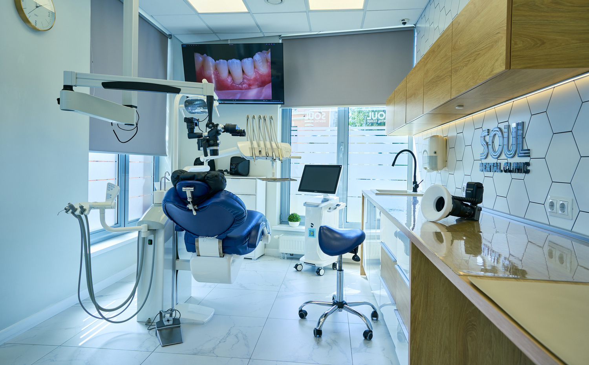

Профессиональная чистка и лечение кариеса под стоматологическим микроскопом.
Стоматологический микроскоп увеличивает изображение в 20–40 раз. Врач видит то, что недоступно невооружённому глазу: мельчайшие трещины, начало кариеса, точные границы больной ткани.
Это означает меньше здоровой ткани удаляется, пломба прилегает точнее, а риск повторного кариеса в том же зубе значительно ниже.

Даже при тщательной домашней гигиене зубной камень образуется в труднодоступных местах. Чистка предотвращает воспаление дёсен.
Чем раньше обратились, тем меньше придётся удалять. Начальный кариес лечится за один визит.
Острая или ноющая боль от температуры — повод не откладывать визит. Чаще всего это кариес или дефект эмали.
Дёсны кровоточат при воспалении, которое начинается с зубного камня. Профессиональная чистка устраняет причину.
Устойчивый пигментный налёт не убирается зубной щёткой. Аппаратная чистка возвращает естественный цвет эмали.
Врач осматривает полость рта, при необходимости делает снимок. Оценивает состояние зубов, дёсен и пломб.
Ультразвуком удаляется зубной камень, затем полируется эмаль. По желанию — обработка фторлаком для укрепления эмали.
Под анестезией и микроскопом. Удаляем только больную ткань — минимально. Восстанавливаем зуб современными светополимерными материалами.
После приёма врач рекомендует средства домашней гигиены под ваш случай и расскажет, как часто нужно приходить на осмотр.
Чаще всего нет. При повышенной чувствительности дёсен могут быть неприятные ощущения, но ненадолго. Если нужно — проводим под анестезией.
Большинству пациентов — раз в полгода. Людям с брекетами, имплантами или предрасположенностью к образованию камня — чаще. Конкретную периодичность врач назначит индивидуально.
Микроскоп позволяет видеть точные границы поражения. Врач удаляет только больную ткань — не больше. Пломба ложится точнее, и риск повторного кариеса под ней ниже.
После осмотра мы называем полную стоимость лечения — включая анестезию, материалы и все этапы работы. Неожиданных доплат нет.
Точная стоимость определяется после осмотра. Нажмите на услугу, чтобы увидеть подробности.
Профилактика или лечение — запишитесь, и мы назначим удобное время.